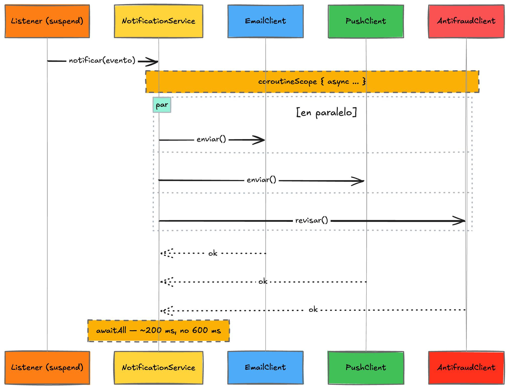

Fase 9 · Coroutines¶
Rama: No hace falta para que la wallet funcione; es un paso extra para quien quiera exprimir el lado Kotlin. Lo que vas a lograr: entender qué es una coroutine y una función suspendida, y llevar el consumidor bloqueante de la Fase 7 a una versión que llama a varios servicios externos en paralelo, sin bloquear un hilo por cada espera.
Esta fase es avanzada y opcional
Todo lo anterior te deja una wallet completa y funcionando. Esto es para cuando un consumidor deja de solo "guardar en la base" y empieza a hablar con servicios externos por red. Si es tu primera vez con Kotlin, puedes saltártela y volver después.
El punto de partida: el consumidor de la Fase 7¶
En la Fase 7, el MovimientoNotificationListener solo escribía un log. En la vida real, cuando llega un MovimientoRegistrado, notification haría varias cosas de verdad: mandar un correo, disparar una notificación push, y de paso avisarle a un servicio de antifraude. Cada una de esas tres es una llamada por red a un servicio externo: sale de tu app, viaja a otro servidor, y espera la respuesta.
Ese "espera la respuesta" es el punto de toda esta fase.
El problema: bloquear un hilo es caro¶
Para atender trabajo, la JVM te da hilos (threads). Piensa en cada hilo como un mesero: puede atender una tarea a la vez. No tienes infinitos; son un recurso limitado.
Concepto al paso: qué es un hilo (thread)
Un hilo es una línea de ejecución: la JVM va corriendo tu código, instrucción por instrucción, sobre un hilo. Tu app tiene un puñado de ellos para repartirse el trabajo. Cuando se acaban (todos ocupados), lo nuevo hace fila y espera.
Cuando tu consumidor llama al servicio de correo y espera la respuesta, el hilo que hace esa llamada queda bloqueado: parado, sin hacer nada, pero ocupado. No puede atender otra cosa mientras espera. Si esa llamada tarda 200 ms, el hilo pasa 200 ms congelado mirando la red.
Ahora súmale que son tres llamadas, una detrás de otra:
@Service
class NotificationService(
private val email: EmailClient,
private val push: PushClient,
private val antifraud: AntifraudClient
) {
fun notificar(evento: MovimientoRegistrado) {
email.enviar(evento) // el hilo espera ~200 ms
push.enviar(evento) // el hilo espera otros ~200 ms
antifraud.revisar(evento) // y otros ~200 ms
}
}
La forma normal: bloqueante y secuencial (y por qué no conviene)
Dos problemas, y los dos duelen:
- Secuencial sin necesidad: las tres llamadas son independientes, pero el correo espera al push, que espera al antifraude. Total ~600 ms, cuando podrían ser ~200 ms si fueran a la vez.
- El hilo queda bloqueado esos 600 ms. Con muchos eventos entrando, todos tus hilos terminan parados esperando la red, y la app deja de rendir aunque el procesador esté ocioso.
La idea: suspender en vez de bloquear¶
Kotlin resuelve esto con coroutines. La pieza central es la función suspendida.
Concepto al paso: función suspendida (suspend fun)
Una función suspendida es una función que puede pausarse en ciertos puntos (por ejemplo, mientras espera una respuesta de red) y retomar después, sin bloquear el hilo mientras tanto. La diferencia con una llamada bloqueante es clave: en la bloqueante, el hilo se queda congelado esperando; en la suspendida, mientras espera, el hilo queda libre para atender otra cosa, y cuando la respuesta llega, la coroutine retoma en un hilo disponible.
La analogía del mesero: bloquear es el mesero parado en tu mesa hasta que la cocina termine tu plato. Suspender es el mesero que toma tu orden, va a atender otras mesas, y vuelve cuando tu plato está listo. El mismo mesero atiende muchísimas más mesas.
Una función suspendida se marca con la palabra suspend. Y hay una regla: una suspend fun solo se puede llamar desde otra suspend fun o desde una coroutine. Es el compilador diciéndote "esto puede pausarse, quien la llame tiene que saberlo".
Nivel senior: qué hace el compilador con suspend
"Pausar y retomar" suena a magia, pero no lo es. Cuando marcas una función con suspend, el compilador de Kotlin la reescribe como una máquina de estados: la parte en trozos, uno por cada punto donde puede suspenderse, y en cada punto guarda "por dónde iba" en un objeto llamado continuation (la continuación). Cuando la operación que esperabas termina, alguien invoca esa continuation y la función retoma justo donde quedó, quizás en otro hilo. No hay un hilo bloqueado esperando: hay un objeto guardado en memoria y una llamada de vuelta. Tú escribes código secuencial de arriba a abajo, y el compilador arma el rompecabezas por detrás. A eso se le llama continuation-passing style, y es lo que hace que las coroutines se lean como código normal sin caer en el infierno de callbacks.
Correr las tres llamadas en paralelo¶
Ahora la parte bonita: como las tres llamadas son independientes, las lanzamos a la vez y esperamos a que todas terminen. Para eso hay tres herramientas.
Concepto al paso: coroutineScope, async y awaitAll
coroutineScope { ... }crea un espacio para lanzar coroutines hijas. No retorna hasta que todas terminan. Y si una falla, cancela las demás y propaga el error. Eso es concurrencia estructurada: no quedan tareas huérfanas corriendo por ahí.async { ... }lanza una coroutine que calcula un valor y te devuelve unDeferred<T>, una especie de "promesa" de ese valor.awaitAll(...)(o.await()sobre un soloDeferred) espera a que los resultados estén listos.
Nivel senior: concurrencia estructurada y cancelación
coroutineScope no es solo "espera a que todas terminen". Impone una jerarquía padre-hijas con reglas estrictas: si una hija falla, el scope cancela a las hermanas y propaga la excepción hacia arriba; y si cancelas el padre (por ejemplo, la petición se abortó o hubo timeout), la cancelación baja a todas las hijas. Nada queda corriendo huérfano quemando recursos. Compara con lanzar tres hilos a mano: si uno explota, los otros dos siguen vivos y nadie los vigila. Esa disciplina —que la vida de las tareas hijas esté atada a la del padre— es lo que hace estructurada a la concurrencia estructurada, y es el mayor salto conceptual frente a los hilos crudos o los Future sueltos.
async vs launch
Usamos async porque queremos un resultado (Deferred<T>) que después esperamos con await. Cuando solo quieres disparar trabajo y no te importa un valor de vuelta, se usa launch, que devuelve un Job sin resultado. Regla simple: async si vas a esperar un valor, launch si es "dispara y sigue".
Con eso, el servicio queda así:
@Service
class NotificationService(
private val email: EmailClient,
private val push: PushClient,
private val antifraud: AntifraudClient
) {
suspend fun notificar(evento: MovimientoRegistrado) = coroutineScope {
val emailJob = async { email.enviar(evento) }
val pushJob = async { push.enviar(evento) }
val antifraudJob = async { antifraud.revisar(evento) }
awaitAll(emailJob, pushJob, antifraudJob)
}
}
Fíjate qué cambió. notificar ahora es suspend. Las tres llamadas se lanzan con async, así que arrancan a la vez en vez de una tras otra. awaitAll espera a que las tres terminen. Y mientras cada una espera su respuesta de red, no bloquea ningún hilo. Total: ~200 ms (lo que tarde la más lenta), no 600 ms, y sin hilos congelados.
Cuándo usarlo y qué ganas
Para 2–3 llamadas de red independientes conocidas de antemano, coroutineScope { async {} } + awaitAll es la herramienta. Lo que ganas frente a la forma normal: paralelismo (~200 ms en vez de 600), sin bloquear hilos (escalas con pocos hilos aunque haya mucha espera), y cancelación estructurada (si una falla, las demás se cancelan solas).
En el tiempo, las tres llamadas se solapan en vez de hacer fila:

El diagrama, paso a paso:
- Listener suspendido →
NotificationService.notificar: llega el evento y arranca la coroutine. - Dentro de
coroutineScope, tresasync: se lanzan a la vez las llamadas aEmailClient,PushClientyAntifraudClient. No hacen fila. - Cada cliente suspende mientras espera su respuesta de red, sin bloquear ningún hilo.
awaitAlljunta las tres: el scope termina cuando respondió la última.
Por eso el total es ~200 ms (lo que tardó la más lenta), no ~600. Y si una falla, el coroutineScope cancela a las otras dos por su cuenta: eso es concurrencia estructurada.
Los clientes son, a su vez, funciones suspendidas. Con WebClient (el cliente HTTP reactivo de Spring) y sus extensiones de Kotlin, la llamada por red se vuelve suspendida con awaitBody:
@Component
class EmailClient(private val webClient: WebClient) {
suspend fun enviar(evento: MovimientoRegistrado) {
webClient.post()
.uri("/emails")
.bodyValue(evento)
.retrieve()
.awaitBodilessEntity() // suspende aquí, sin bloquear el hilo
}
}
Los otros dos son idénticos, solo cambia el .uri(...) (y antifraud expone revisar en vez de enviar, por semántica):
@Component
class PushClient(private val webClient: WebClient) {
suspend fun enviar(evento: MovimientoRegistrado) {
webClient.post()
.uri("/push")
.bodyValue(evento)
.retrieve()
.awaitBodilessEntity()
}
}
@Component
class AntifraudClient(private val webClient: WebClient) {
suspend fun revisar(evento: MovimientoRegistrado) {
webClient.post()
.uri("/antifraud")
.bodyValue(evento)
.retrieve()
.awaitBodilessEntity()
}
}
Tres clientes separados, a propósito
Podrías tener un solo cliente con un parámetro para la ruta, pero cada servicio externo —correo, push, antifraude— es una responsabilidad distinta que mañana evoluciona por su lado (uno agrega reintentos, otro cambia de proveedor). Un cliente por servicio deja cada cambio contenido. Es el mismo criterio de package by feature: preferimos la duplicación honesta a la abstracción prematura.
Necesitas WebClient y el puente de coroutines
WebClient y las extensiones awaitBody/awaitBodilessEntity vienen de WebFlux. Agrega al build.gradle.kts:
implementation("org.springframework.boot:spring-boot-starter-webflux")
implementation("org.jetbrains.kotlinx:kotlinx-coroutines-reactor")
WebClient convive sin problema con tu app web tradicional: acá lo usamos solo como cliente para llamar afuera, no cambiamos cómo tu wallet atiende sus propias peticiones. El kotlinx-coroutines-reactor es el puente que convierte el mundo reactivo de WebClient en funciones suspendidas.
Correr esto 100% local: servicios externos de mentira¶
Los clientes de arriba hacen POST a /emails, /push y /antifraud. Pero en un taller no tenemos esos tres servicios de verdad, y montarlos sería otro proyecto. La solución: un controlador de mentira dentro de la misma app que responde en esas rutas y simula la latencia de un servicio externo (unos 200 ms). Así ves el efecto de las coroutines sin depender de nada de afuera.
package com.baqjug.wallet.notification.web
import com.baqjug.wallet.movement.domain.MovimientoRegistrado
import org.slf4j.LoggerFactory
import org.springframework.http.ResponseEntity
import org.springframework.web.bind.annotation.PostMapping
import org.springframework.web.bind.annotation.RequestBody
import org.springframework.web.bind.annotation.RequestMapping
import org.springframework.web.bind.annotation.RestController
@RestController
@RequestMapping("/mock-external")
class MockExternalController {
private val log = LoggerFactory.getLogger(javaClass)
@PostMapping("/emails")
fun emails(@RequestBody evento: MovimientoRegistrado): ResponseEntity<Void> =
simularLatencia("email", evento)
@PostMapping("/push")
fun push(@RequestBody evento: MovimientoRegistrado): ResponseEntity<Void> =
simularLatencia("push", evento)
@PostMapping("/antifraud")
fun antifraud(@RequestBody evento: MovimientoRegistrado): ResponseEntity<Void> =
simularLatencia("antifraud", evento)
private fun simularLatencia(
servicio: String,
evento: MovimientoRegistrado
): ResponseEntity<Void> {
log.info("🐢 [mock-external] {} procesando {}...", servicio, evento.toId)
Thread.sleep(200) // simula un servicio externo lento
log.info("✅ [mock-external] {} terminó", servicio)
return ResponseEntity.accepted().build()
}
}
Esto es andamiaje de la demo, no producción
El MockExternalController existe solo para que el ejercicio corra en tu máquina sin tres servicios reales. En producción esas rutas viven en otros servicios (o en proveedores), y tu wallet apenas los llama. El Thread.sleep(200) está ahí a propósito para imitar una red lenta; nunca metas un sleep así en tu código de verdad.
Y para que los clientes sepan a dónde pegar, un WebClient con la URL base configurable:
package com.baqjug.wallet.notification.config
import org.springframework.beans.factory.annotation.Value
import org.springframework.context.annotation.Bean
import org.springframework.context.annotation.Configuration
import org.springframework.web.reactive.function.client.WebClient
@Configuration
class WebClientConfig {
@Bean
fun webClient(
@Value("\${wallet.notification.external-base-url:http://localhost:8080/mock-external}")
baseUrl: String
): WebClient = WebClient.builder()
.baseUrl(baseUrl)
.build()
}
La URL base, por configuración
Por defecto apunta al mock (http://localhost:8080/mock-external), así arranca sin que toques nada. En un entorno real cambias wallet.notification.external-base-url (o su variable de entorno) para apuntar a los servicios de verdad, sin recompilar. Es el mismo criterio de ${...:default} que ya usaste con el correo en la Fase 7.
El listener: uno nuevo, sin tocar el que ya anda¶
Falta enganchar esto al consumidor. La buena noticia: desde Spring Kafka 3.2, un @KafkaListener puede ser una función suspend; Spring la corre como coroutine sin que montes nada más.
Ahora, una decisión de diseño. En la Fase 7 ya existe MovimientoNotificationListener (grupo notification), que manda el correo de verdad por Mailpit. Ese anda bien y no lo vamos a tocar. En vez de reemplazarlo, agregamos un listener nuevo, MovimientoCoroutineListener, con su propio groupId (notification-coroutines-demo):
package com.baqjug.wallet.notification.messaging
import com.baqjug.wallet.movement.domain.MovimientoRegistrado
import com.baqjug.wallet.notification.domain.NotificationService
import org.springframework.kafka.annotation.KafkaListener
import org.springframework.stereotype.Component
@Component
class MovimientoCoroutineListener(
private val notificationService: NotificationService
) {
@KafkaListener(
topics = ["wallet.movements"],
groupId = "notification-coroutines-demo"
)
suspend fun onMovimiento(evento: MovimientoRegistrado) {
notificationService.notificar(evento)
}
}
Decisión de diseño: sumar, no reemplazar
El listener de la Fase 7 (MovimientoNotificationListener, grupo notification) ya hace un trabajo real —el correo— y no queremos romperlo para mostrar coroutines. Como cada groupId recibe su propia copia de cada evento (lo viste en la Fase 7), el listener nuevo con grupo notification-coroutines-demo consume el mismo topic en paralelo y sin pisar al viejo: lleva su propio offset y no le quita eventos a nadie. Un mismo wallet.movements, dos consumidores independientes. El día que quieras que esta versión reemplace a la vieja, jubilas el listener de la Fase 7; por ahora conviven para poder comparar.
Spring al paso: @KafkaListener suspend fun
El método del listener es suspend, y con eso puede llamar a notificationService.notificar(...), que también es suspend. Spring for Apache Kafka (desde la versión 3.2) detecta que el listener es suspendido y lo corre en una coroutine, sin que tú montes nada más. Así la cadena entera —listener → servicio → clientes HTTP— es no bloqueante de punta a punta.
Verlo funcionar¶
Con la app y Redpanda arriba, haz una transferencia normal (la misma de la Fase 7). Además del correo real que ya mandaba notification, en los logs de la app vas a ver al mock trabajar:
🐢 [mock-external] email procesando 22222222-...
🐢 [mock-external] push procesando 22222222-...
🐢 [mock-external] antifraud procesando 22222222-...
✅ [mock-external] push terminó
✅ [mock-external] email terminó
✅ [mock-external] antifraud terminó
Fíjate en el orden: los tres 🐢 procesando salen casi al mismo tiempo, no uno después de que el anterior terminó. Eso es el async + awaitAll: las tres llamadas arrancaron juntas y notificar completó en ~200 ms (lo que tardó la más lenta), no en ~600 ms. Si las llamaras en serie —email.enviar(...), luego push.enviar(...), luego antifraud.revisar(...)— verías cada 🐢 esperar al ✅ anterior, y el total treparía a ~600 ms.
Muchas llamadas: parMap (Arrow)¶
coroutineScope { async {} } + awaitAll es perfecto para 2 o 3 llamadas conocidas de antemano (correo, push, antifraude). Pero, ¿y si tienes que llamar a un servicio externo una vez por cada elemento de una lista de tamaño N? Por ejemplo, un consumer que recibe un lote de movimientos y por cada uno consulta las preferencias del destinatario en otro servicio.
Cómo se hace normal (y por qué no conviene)¶
Con la stdlib, lo directo es reusar async sobre la lista:
// Lanza las N a la vez, SIN límite.
val resultados = items.map { async { llamarServicio(it) } }.awaitAll()
Con N chico funciona. Pero tiene dos problemas serios:
- No acota la concurrencia. Con N grande (500 elementos) le mandas 500 peticiones simultáneas al servicio de al lado y lo tumbas. Para limitarlo tendrías que meter un
Semaphorea mano con suwithPermit, y el código se ensucia. - Es todo-o-nada con los errores. Si un elemento falla,
awaitAllcae de una (fail-fast). No hay forma fácil de decir "3 de 20 fallaron, pero acá van los 17 buenos".
Con parMap, y cuándo conviene¶
arrow-fx-coroutines trae parMap, que resuelve las dos cosas de una:
// Acota a 4 en paralelo, en un solo parámetro.
val resultados = items.parMap(concurrency = 4) { llamarServicio(it) }
Concepto al paso: qué te da parMap
- Concurrencia acotada sin boilerplate:
concurrency = Nmete un semáforo interno; corren máximo N a la vez y, al terminar una, entra la siguiente. SinSemaphorea mano. - Concurrencia estructurada: por dentro usa
coroutineScope, así que si uno falla, cancela al resto y propaga — igual que tuawaitAll, pero sin escribirlo. parMapOrAccumulate: la variante que en vez de fail-fast acumula los errores, para responder "3 de 20 fallaron" sin perder los 17 buenos.
Cuándo usar cada uno
- 2–3 llamadas fijas y conocidas →
coroutineScope { async {} }+awaitAll. - N llamadas sobre una colección →
parMap, sobre todo si N puede crecer (quieres acotar la concurrencia) o si te importan los fallos parciales (parMapOrAccumulate).
Antes de meter la dependencia: ¿de verdad la necesitas?
Si el único uso de Arrow va a ser parMap, la stdlib ya te da concurrencia acotada sin dependencia nueva: items.asFlow().flatMapMerge(concurrency = 4) { flow { emit(llamarServicio(it)) } }.toList(). Arrow se justifica cuando ya usas (o vas a usar) su ecosistema más amplio —Either, el DSL Raise, validación de dominio—; ahí parMapOrAccumulate encaja con ese estilo y no es una dependencia aislada para una sola función. Justifica cada dependencia: por qué la necesitas y por qué no la stdlib.
En qué hilo corre esto: los dispatchers¶
Una coroutine, tarde o temprano, corre sobre un hilo real. Quién lo decide es el dispatcher.
Concepto al paso: dispatcher
Un dispatcher es la política de "sobre qué hilos corre esta coroutine". Los tres que verás:
Dispatchers.Default: un pool del tamaño de tus núcleos, para trabajo que quema CPU (cálculos pesados).Dispatchers.IO: un pool grande y elástico, pensado para operaciones bloqueantes de entrada/salida que no pudiste hacer suspendidas (una librería vieja, JDBC).Dispatchers.Main: el hilo de interfaz (en apps de escritorio o móvil; en un backend no aplica).
Nivel senior: la regla de oro — nunca bloquees dentro de una coroutine
Este es el error clásico que hace que "puse coroutines y no mejoró nada". Si dentro de una suspend fun llamas a código bloqueante (una consulta JDBC, un Thread.sleep, una librería que no es suspendida), amarras el hilo del dispatcher y tumbas todo el beneficio: ese pool es chico y se te llena de hilos congelados. Si tienes que llamar algo bloqueante, lo aíslas con withContext(Dispatchers.IO) { ... }, que mueve solo ese pedazo a un pool preparado para esperar. La otra salida moderna son los virtual threads, que hacen ese bloqueo barato. Por eso coroutines y virtual threads se llevan bien, no compiten.
¿Y los virtual threads?¶
Quizás escuchaste que los virtual threads (hilos virtuales, del JDK 21 en adelante) resuelven lo mismo. En parte sí: un hilo virtual es tan barato que la JVM puede tener millones, y cuando uno se bloquea esperando red, no amarra un hilo "real" del sistema. Con virtual threads, tu código bloqueante de siempre escala sin reescribirlo.
La diferencia práctica: los virtual threads hacen barato bloquear; las coroutines te dan además concurrencia estructurada y paralelismo explícito (async/awaitAll) para decir "estas tres cosas van a la vez y espero a todas". No son rivales; se combinan bien. Para "que un consumidor lento no amarre hilos", cualquiera de los dos sirve. Para "lanza estas tres llamadas en paralelo y júntalas", las coroutines lo dicen más claro.
Cierre de la fase¶
./gradlew test
git add .
git commit -m "fase-9: consumidor de notification no bloqueante con coroutines"
Lo que te llevas: una función suspendida no bloquea el hilo mientras espera, y con coroutineScope + async/awaitAll corres varias llamadas externas en paralelo con código que se lee de arriba a abajo, sin callbacks. Es la herramienta para cuando un consumidor deja de solo tocar la base y empieza a orquestar servicios externos.
En la Fase 10 cerramos el taller: llevamos la wallet a la nube con correo real, imagen Docker y despliegue con GitHub Actions.